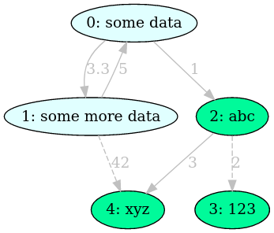
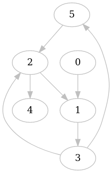
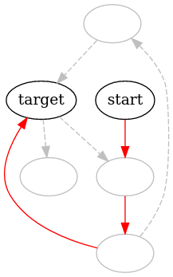
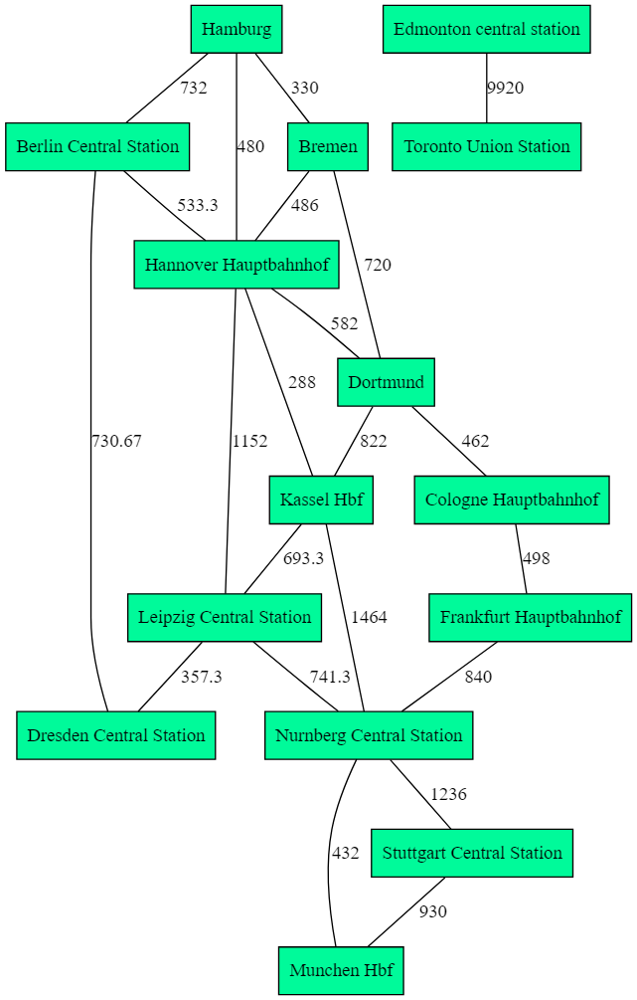
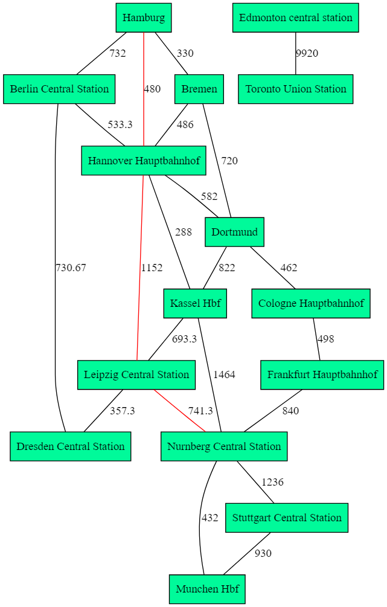
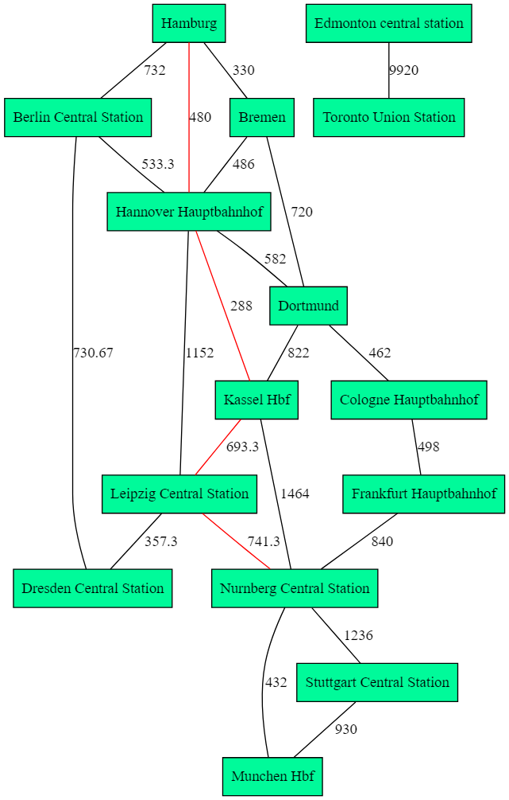
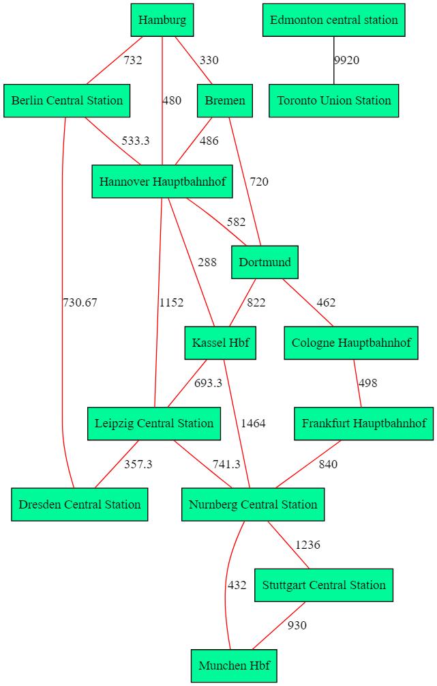

Graaf lib
A general-purpose lightweight graph library implemented in C++
Easy to Use
Graaf is designed as a lightweight alternative for Boost Graph. The library is created to be easy to use right from the start.
General-Purpose
Graphs can wrap arbitrary types, i.e. graaf::directed_graph<MyVertexClass, MyEdgeClass>
Lightning Fast
Graaf is written in C++ with performance in mind. This allows users to efficiently perform complex algorithms on large graphs.
Quickstart Intro
Let’s install Graaf in your project…
Getting Started
Quickstart - Installation
5 minutes to learn the most important Graaf concepts.
Installation
Graaf Header-Only Installation
Installing Graaf on your project is easy! Simply copy the graaflib directory to your project and add it to your
include path.
-
Copy
graaflibto your project. -
Before compiling, add the directory to your include path.
# For C compiler export C_INCLUDE_PATH="/full/path/to/include/:$C_INCLUDE_PATH" # For Cpp compiler export CPLUS_INCLUDE_PATH="/full/path/to/include/:$CPLUS_INCLUDE_PATH"Or in CMake:
include_directories("graaf/include") -
Include the graaf header in your sources.
#include <graaflib/graph.h>
CMake FetchContent
Alternatively, this project can be pulled in using CMake’s FetchContent:
include(FetchContent)
FetchContent_Declare(
graaflib
GIT_REPOSITORY https://github.com/bobluppes/graaf.git
GIT_TAG v1.2.0
)
FetchContent_MakeAvailable(graaflib)
Pin GIT_TAG to a released version rather than main - main can contain unreleased, potentially breaking changes.
Now you can link your target against Graaf::Graaf:
target_link_libraries(${PROJECT_NAME} PRIVATE Graaf::Graaf)
CMake Options
There are multiple CMake Options available to choose how you want to build Graaf in your Project.
SKIP_TESTS- Default:
OFF - Enabling skips building the tests.
- Default:
SKIP_EXAMPLES- Default:
OFF - This skips building the example usages of the Library.
- Default:
SKIP_BENCHMARKS- Default:
OFF - This skips building the Benchmarks.
- Default:
GRAAF_DOWNLOAD_PERF_DATASETS- Default:
OFF - Some benchmarks run against large real-world graph datasets. Enabling this downloads those datasets so these benchmarks can run; leaving it off still builds them, it just skips downloading the data.
- Default:
These Options can be set while executing the cmake command
cmake -DSKIP_TESTS=ON -DSKIP_EXAMPLES=ON -DSKIP_BENCHMARKS=ON [source_directory]
or by setting them in your Projects CMakeLists.txt (before FetchContent_MakeAvailable(graaflib))
set(SKIP_TESTS ON)
set(SKIP_BENCHMARKS ON)
set(SKIP_EXAMPLES ON)
FetchContent_MakeAvailable(graaflib)
Alternative Installation Methods
As a submodule
Graaf can also be installed as a submodule in your project
- Go to your project directory
cd projectdir - Add Graaf as submodule
git submodule add https://github.com/bobluppes/graaf.git - Then add Graaf as include directory with CMake:
include_directories("graaf/include")
Quickstart - Basics
5 minutes to learn the most important Graaf concepts.
Graaf Architecture
From a very high level, the project is structured in two parts:
- The graph classes and core data structures
- Algorithms and additional functionality
Graph classes and core data structures
The main class of the library is the abstract graph class:
enum class edge_type { WEIGHTED, UNWEIGHTED };
enum class graph_spec { DIRECTED, UNDIRECTED };
template <typename VERTEX_T, typename EDGE_T, edge_type EDGE_TYPE_V, graph_spec GRAPH_SPEC_V>
class graph {...};
An instance of a graph can have user provided types for the vertices and edges. Internally, it stores the graph in an
adjacency list, and has separate containers for the vertex and edge instances:
// N.B. These types are a bit more abstracted in the codebase behind using
// declarations, but for clarity I have left this out.
// Adjacency information is stored in a set for fast existence checks and fast removal
std::unordered_map<vertex_id_t, std::unordered_set<vertex_id_t>> adjacency_list_{};
// Storing these in a separate container has the advantage that
// vertices and edges are only in memory once
std::unordered_map<vertex_id_t, VERTEX_T> vertices_{};
std::unordered_map<std::pair<vertex_id_t, vertex_id_t>, edge_t, edge_id_hash> edges_{};
The graph class is abstract as it contains pure virtual private methods related to the handling of
edges (do_has_edge, do_get_edge, do_add_edge, and do_remove_edge).
Directed and undirected graphs
There are two classes which publicly derive from graph:
directed_graphundirected_graph
template <typename VERTEX_T, typename EDGE_T, edge_type EDGE_TYPE_V = edge_type::UNWEIGHTED>
class directed_graph final
: public graph<VERTEX_T, EDGE_T, EDGE_TYPE_V, graph_spec::DIRECTED>
{...};
template <typename VERTEX_T, typename EDGE_T, edge_type EDGE_TYPE_V = edge_type::UNWEIGHTED>
class undirected_graph final
: public graph<VERTEX_T, EDGE_T, EDGE_TYPE_V, graph_spec::UNDIRECTED>
{...};
These are the classes which the user instantiates.
They provide implementations for the pure virtual methods related to handling edges. The unweighted_graph first sorts
the pair of vertex ids related to an edge before interacting with the internal edges_ data structure. This ensures
that an edge a->b is the same as an edge from b->a.
Weighted graphs
Certain algorithms (such as A*) operate on weighted graphs. A graph is automatically weighted if a primitive numeric
type is passed as a template parameter to EDGE_T. Alternatively, user provided edge classes can publicly derive
from weighted_edge.
The weighted_edge class provides a default implementation for the get_weight method, but this can be overridden in
the derived class:
template <typename WEIGHT_T = int>
class weighted_edge {
public:
using weight_t = WEIGHT_T;
/**
* By default an edge has a unit weight.
*/
[[nodiscard]] virtual WEIGHT_T get_weight() const noexcept { return 1; };
};
To create an unweighted graph, simply do not derive from weighted_edge in your edge class.
Algorithms and additional functionality
The idea here is to keep the graph classes as general-purpose as possible, and to not include use case specific logic ( such as dot serialization) as member functions. Therefore, each algorithm/utility function is implemented as a free function.
Creating Your First Graph
- In your
main.cppimport Graaf:
#include <graaflib/graph.h>
- Define a directed graph
g
graaf::directed_graph<const char, int> g;
- Add vertices to the graph:
const auto a = g.add_vertex('a');
const auto b = g.add_vertex('b');
const auto c = g.add_vertex('c');
- Connect the vertices with edges:
g.add_edge(a, b, 1);
g.add_edge(a, c, 1);
- Putting it all together:
#include <graaflib/graph.h>
int main()
{
graaf::directed_graph<const char, int> g;
const auto a = g.add_vertex('a');
const auto b = g.add_vertex('b');
const auto c = g.add_vertex('c');
g.add_edge(a, b, 1);
g.add_edge(a, c, 1);
return 0;
}
Congratulations! You just created the following graph 🎉
Using Algorithms
- In your
main.cppimport Graaf and algorithm of choice:
#include <graaflib/graph.h>
#include <graaflib/algorithm/cycle_detection/dfs_cycle_detection.h>
- Build your graph:
graaf::directed_graph<const char, int> g;
const auto a = g.add_vertex('a');
const auto b = g.add_vertex('b');
const auto c = g.add_vertex('c');
g.add_edge(a, b, 1);
g.add_edge(c, a, 1);
- Run the algorithm:
std::cout << "Has cycles: " << graaf::algorithm::dfs_cycle_detection(g) << "\n";
- Visualize the graph:
#include <graaflib/io/dot.h>
...
graaf::io::to_dot(g, "./Cycles.dot");
- Putting it all together:
#include <graaflib/graph.h>
#include <graaflib/io/dot.h>
#include <graaflib/algorithm/cycle_detection/dfs_cycle_detection.h>
#include <iostream>
int main(int argc, char** argv)
{
graaf::directed_graph<const char, int> g;
const auto a = g.add_vertex('a');
const auto b = g.add_vertex('b');
const auto c = g.add_vertex('c');
g.add_edge(a, b, 1);
g.add_edge(c, a, 1);
std::cout << "Vertices: " << g.vertex_count() << "\n";
std::cout << "Edges: " << g.edge_count() << "\n";
std::cout << "Has cycles: " << graaf::algorithm::dfs_cycle_detection(g) << "\n";
g.add_edge(b, c, 1);
std::cout << "Has cycles: " << graaf::algorithm::dfs_cycle_detection(g) << "\n";
graaf::io::to_dot(g, "./Cycles.dot");
std::cout << "Run: dot -Tpng -o Cycles.png Cycles.dot\n";
return 0;
}
Congratulations! You just detected if there are cycles in the following graph
Algorithms Overview
This section provides an overview of the algorithms currently implemented in Graaf.
Clique Detection
Bron-Kerbosch algorithm
Bron-Kerbosch algorithm finding all maximal cliques in an undirected graph. A clique is a subset of vertices such that every two distinct vertices are adjacent to each other. The maximal clique is the subset of vertices of an undirected graph where no additional vertex can be added due to the complete connectivity rule. The algorithm lists all maximum cliques of an undirected graph.
The worst-case run time of the algorithm is 3V/3. wikipedia
Syntax
template <typename V, typename E>
std::vector<std::vector<vertex_id_t>> bron_kerbosch(
const graph<V, E, graph_type::UNDIRECTED>& graph);
- graph The graph to extract maximal cliques.
- return Returns 2D vector of vertices each vector represent set of vertices that form clique.
Graph Coloring Algorithms
Greedy Graph Coloring Algorithm
Greedy Graph Coloring computes a coloring of the vertices of a (simple, connected) graph such that no two adjacent vertices have the same color.
If the graph has different connected components, each component will be treated as a separate simple connected graph.
For a directed graph, this colors the underlying undirected graph: two vertices are considered adjacent if there is an edge between them in either direction.
The algorithm is heuristic and does not guarantee an optimal number of different colors (that is, equal to the chromatic number of a simple, connected graph).
Colors are represented by the numbers 0, 1, 2,… The greedy algorithm considers the vertices of the graph in sequence and assigns each vertex its first available color, i.e. the color with the smallest number that is not already used by one of its neighbors.
The overall worst-case time complexity of the algorithm is O(n^2). In cases where the graph has a fixed degree (a
constant number of neighbors for each vertex), the time complexity can be approximated as O(n). However, if the graph
is highly connected (dense) and approaches a complete graph, the time complexity could approach O(n^2).
If no coloring is possible, an empty unordered_map is returned. This is the case when the graph contains no vertices.
Syntax
template <typename GRAPH>
std::unordered_map<vertex_id_t, int> greedy_graph_coloring(const GRAPH& graph);
- graph A graph to perform graph coloring on.
- return An unordered_map where keys are vertex identifiers and values are their respective colors. If no coloring
is possible, an empty
unordered_mapis returned.
Welsh Powell Algorithm
Welsh Powell Algorithm computes a coloring of the vertices of a (simple, connected) graph such that no two adjacent vertices have the same color.
If the graph has different connected components, each component will be treated as a separate simple connected graph.
For a directed graph, this colors the underlying undirected graph: two vertices are considered adjacent if there is an edge between them in either direction.
The algorithm is heuristic and does not guarantee an optimal number of different colors (that is, equal to the chromatic number of a simple, connected graph).
Colors are represented by the numbers 0, 1, 2,… The Welsh Powell algorithm considers the vertices of the graph in descending order of their degrees and assigns each vertex with its first available color, i.e. the color with the smallest number that is not already used by one of its neighbors.
The overall worst-case time complexity of the algorithm is O(n^2). In cases where the graph has a fixed degree (a
constant number of neighbors for each vertex), the time complexity can be approximated as O(n). However, if the graph
is highly connected (dense) and approaches a complete graph, the time complexity could approach O(n^2).
If no coloring is possible, an empty unordered_map is returned. This is the case when the graph contains no vertices.
Syntax
template <typename GRAPH>
std::unordered_map<vertex_id_t, int> welsh_powell_coloring(const GRAPH& graph);
- graph A graph to perform graph coloring on.
- return An unordered_map where keys are vertex identifiers and values are their respective colors. If no coloring
is possible, an empty
unordered_mapis returned.
Cycle Detection Algorithms
DFS Based Cycle Detection
A DFS based cycle detection algorithm is used to identify cycles in graphs, both directed and undirected. The algorithm can be used to detect cycles in the structure of a graph, as it does not consider edge weights.
Directed graph
The key idea is that when a vertex is processed, mark it as: UNVISITED, VISITED and NO_CYCLE. By default all vertices marked as UNVISITED. During the traversal, we label vertices as VISITED. At the exit of the recursion, we label the vertex as NO CYCLE. If we met a vertex labeled VISITED, we found a cycle in the graph.
Undirected graph
The key idea is to store the parent of each vertex during the traversal. So when we check neighboring vertices, we skip back edge. During the traversal we mark the vertex as visited and continue the traversal. In case a vertex was visited before and vertices have different parents, we found a cycle.
The runtime of the algorithm is O(|V| + |E|) and memory consumption is O(|V|). Where V is the number of vertices in
the graph and E the number of edges.
The algorithm uses DFS traversal and therefore suffers the same limitations (see depth-first-search.md).
Use cases
- Resource dependencies:
- Redundant connections.
- Deadlocks in concurrent systems.
- Deadlocks in concurrent systems.
- Logical dependencies:
- Data base relation.
- Dependency management.
- Circuit design.
- Infinity loops.
Syntax
Cycle detection for directed graph.
template <typename V, typename E>
[[nodiscard]] bool dfs_cycle_detection(
const graph<V, E, graph_type::DIRECTED> &graph);
Cycle detection for undirected graph.
template <typename V, typename E>
[[nodiscard]] bool dfs_cycle_detection(
const graph<V, E, graph_type::UNDIRECTED> &graph);
- graph The graph to traverse.
- return Returns true in case of cycle otherwise returns false.
Similar algorithms
There are many algorithms for cycle detection or algorithms with specific cycle conditions. See wikipedia
Minimum Spanning Tree
Kruskal’s Algorithm
Kruskal’s algorithm finds the minimum spanning forest of an undirected edge-weighted graph. If the graph is connected,
it finds a minimum spanning tree.
The algorithm is implemented with disjoint set union and finding minimum weighted edges.
Worst-case performance is O(|E|log|V|), where |E| is the number of edges and |V| is the number of vertices in the
graph. Memory usage is O(V+E) for maintaining vertices (DSU) and edges.
Syntax
Calculates the shortest path with the minimum edge sum.
template <typename V, typename E>
[[nodiscard]] std::vector<edge_id_t> kruskal_minimum_spanning_tree(
const graph<V, E, graph_type::UNDIRECTED>& graph);
- graph The graph to extract MST or MSF.
- return Returns a vector of edges that form MST if the graph is connected, otherwise it returns the minimum spanning forest.
Special case
In case of multiply edges with same weight leading to a vertex, prioritizing vertices with lesser vertex number.
std::sort(edges_to_process.begin(), edges_to_process.end(),
[](detail::edge_to_process<E>& e1,
detail::edge_to_process<E>& e2) {
if (e1 != e2)
return e1.get_weight() < e2.get_weight();
return e1.vertex_a < e2.vertex_a || e1.vertex_b < e2.vertex_b;
});
For custom type edge, we should provide < and != operators
struct custom_edge : public graaf::weighted_edge<int> {
public:
int weight_{};
[[nodiscard]] int get_weight() const noexcept override { return weight_; }
custom_edge(int weight): weight_{weight} {};
custom_edge(){};
~custom_edge(){};
// Providing '<' and '!=' operators for sorting edges
bool operator<(const custom_edge& e) const noexcept {
return this->weight_ < e.weight_;
}
bool operator!=(const custom_edge& e) const noexcept {
return this->weight_ != e.weight_;
}
};
Prim’s Algorithm
Prim’s algorithm computes the minimum spanning tree (MST) of a connected, undirected graph with weighted edges. Starting with an arbitrary vertex, the algorithm iteratively selects the edge with the smallest weight that connects a vertex in the tree to a vertex outside the tree, adding it to the MST.
The algorithm’s worst-case time complexity is O(∣E∣log∣V∣).
Unlike Kruskal’s algorithm, Prim’s algorithm works efficiently on dense graphs. A limitation is that it requires the graph to be connected and does not handle disconnected graphs or graphs with negative-weight cycles.
Prim’s MST is often used in network design, such as electrical wiring and telecommunications.
Syntax
template <typename V, typename E>
[[nodiscard]] std::optional<std::vector<edge_id_t> > prim_minimum_spanning_tree(
const graph<V, E, graph_type::UNDIRECTED>& graph, vertex_id_t start_vertex);
- graph The undirected graph for which we want to compute the MST.
- start_vertex The vertex ID which should be the root of the MST.
- return Returns a vector of edges that form MST if the graph is connected, otherwise returns an empty optional.
Shortest Path Algorithms
A* Search Algorithm
A* computes the shortest path between a starting vertex and a target vertex in weighted and unweighted graphs.
It can be seen as an extension of Dijkstra’s classical shortest paths algorithm. The implementation of A* also tries to
follow dijkstra_shortest_path closely where appropriate. Compared to Dijkstra’s algorithm, A* only finds the shortest
path from a start vertex to a target vertex, and not the shortest path to all possible target vertices. Another
difference is that A* uses a heuristic function to achieve better performance.
At each iteration of its main loop, A* needs to determine which of its paths to extend. It does so by minimizing the
so-called f_score.
In A*, the f_score represents the estimated total cost of the path from the start vertex to the goal vertex through
the current vertex. It’s a combination of two components:
g_score: The actual cost of the path from the start vertex to the current vertex.h_score(heuristic score): An estimate of the cost required from the current vertex to the goal vertex.
A* tries to minimize the f_score for each vertex as it explores the graph. The idea is to prioritize exploring
vertices that have lower f_score values, as they are expected to lead to potentially better paths.
Mathematically, f_score is often defined as:
f_score = g_score + h_score
Where:
g_scoreis the cost of the path from the start vertex to the current vertex.h_scoreis the heuristic estimate of the cost from the current vertex to the goal vertex.
In the implementation, the heuristic function heuristic provides an estimate of h_score for each vertex, and the
actual cost of the path from the start vertex to the current vertex is stored in the g_score unordered map, as the
algorithm progresses.
In the implementation, dist_from_start from path_vertex represents the g_score (the true accumulated cost from
the start vertex), which is what is reported as total_weight on the resulting path. The f_score used to order the
open_set is tracked separately and is never stored in dist_from_start.
The time complexity of A* depends on the provided heuristic function. In the worst case of an unbounded search space,
the number of nodes expanded is exponential in the depth of the solution (the shortest path) d. This can be expressed
as O(b^d), where b is the branching factor (the average number of successors per state) per stage.
In weighted graphs, edge weights should be non-negative. Like in the implementation of Dijkstra’s algorithm, A* is
implemented with the priority queue provided by C++, to perform the repeated selection of minimum (estimated) cost nodes
to expand. This is the open_set. If the shortest path is not unique, one of the shortest paths is returned.
Syntax
calculates the shortest path between on start_vertex and one end_vertex using A* search. Works on both weighted as well as unweighted graphs. For unweighted graphs, a unit weight is used for each edge.
template <typename V, typename E, graph_type T, typename HEURISTIC_T, typename WEIGHT_T = decltype(get_weight(std::declval<E>()))>
requires std::is_invocable_r_v<WEIGHT_T, HEURISTIC_T&, vertex_id_t>
std::optional<graph_path<WEIGHT_T>> a_star_search(
const graph<V, E, T> &graph, vertex_id_t start_vertex, vertex_id_t target_vertex,
const HEURISTIC_T &heuristic);
- graph The graph to extract shortest path from.
- start_vertex The vertex id where the shortest path should should start.
- target_vertex The vertex id where the shortest path should end.
- heuristic A heuristic function estimating the cost from a vertex to the target.
- return An optional containing the shortest path (a list of vertices) if found, or std::nullopt if no such path exists.
Bellman-Ford Shortest Path
Bellman-Ford’s algorithm computes shortest paths from a single source vertex to all of the other vertices in weighted
graph and unweighted graphs. In weighted graphs, edge weights are allowed to be negative. Bellman-Ford’s algorithm runs
in O(|E||V|) for connected graphs, where |E| is the number of edges and |V| the number of vertices in the
graph.
A limitation is that this implementation doesn’t check for negative-weight cycles.
Syntax
Find the shortest paths from a source vertex to all other vertices using the Bellman-Ford algorithm.
template <typename V, typename E, graph_type T,
typename WEIGHT_T = decltype(get_weight(std::declval<E>()))>
std::unordered_map<vertex_id_t, graph_path<WEIGHT_T>>
bellman_ford_shortest_paths(const graph<V, E, T>& graph, vertex_id_t start_vertex);
- graph The graph to extract shortest path from.
- start_vertex The source vertex for the shortest paths.
- return A map of target vertex IDs to shortest path structures. Each value contains a graph_path object representing the shortest path from the source vertex to the respective vertex. If a vertex is unreachable from the source, its entry will be absent from the map.
BFS Based Shortest Path
Breadth-First Search (BFS) is a graph traversal algorithm that efficiently finds the shortest
path between two vertices in an unweighted graph by exploring vertices level by level,
guaranteeing the shortest path, and has a time complexity of O(|E| + |V|),
where |V| is the number of vertices and |E| is the number of edges in the graph.
BFS uses a queue to iteratively visit neighboring vertices from the source
vertex, ensuring that the shortest path is discovered before longer paths.
Syntax
Calculates the shortest path between one start_vertex and one end_vertex using BFS. This does not consider edge weights.
template <typename V, typename E, graph_type T, typename WEIGHT_T = decltype(get_weight(std::declval<E>()))>
std::optional<graph_path<WEIGHT_T>> bfs_shortest_path(
const graph<V, E, T>& graph, vertex_id_t start_vertex, vertex_id_t end_vertex);
- graph The graph to extract shortest path from.
- start_vertex Vertex id where the shortest path should start.
- end_vertex Vertex id where the shortest path should end.
- return An optional with the shortest path (list of vertices) if found.
Dijkstra Shortest Path
Dijkstra’s algorithm computes shortest paths between nodes in weighted and unweighted graphs. In weighted graphs,
edge weights should be non-negative. Dijkstra’s algorithm is implemented with a priority queue and runs
in O(|E|log|V|) for connected graphs, where |E| is the number of edges and |V| the number of vertices in the
graph.
Syntax
calculates the shortest path between on start_vertex and one end_vertex using Dijkstra’s algorithm. Works on both weighted as well as unweighted graphs. For unweighted graphs, a unit weight is used for each edge.
template <typename V, typename E, graph_type T, typename WEIGHT_T = decltype(get_weight(std::declval<E>()))>
std::optional<graph_path<WEIGHT_T>>
dijkstra_shortest_path(const graph<V, E, T>& graph, vertex_id_t start_vertex, vertex_id_t end_vertex);
- graph The graph to extract shortest path from.
- start_vertex Vertex id where the shortest path should start.
- end_vertex Vertex id where the shortest path should end.
- return An optional with the shortest path (list of vertices) if found.
Find the shortest paths from a source vertex to all other vertices in the graph using Dijkstra’s algorithm.
template <typename V, typename E, graph_type T, typename WEIGHT_T = decltype(get_weight(std::declval<E>()))>
[[nodiscard]] std::unordered_map<vertex_id_t, graph_path<WEIGHT_T>>
dijkstra_shortest_paths(const graph<V, E, T>& graph, vertex_id_t source_vertex);
- graph The graph we want to search.
- source_vertex The source vertex from which to compute shortest paths.
- return A map containing the shortest paths from the source vertex to all other vertices. The map keys are target vertex IDs, and the values are instances of graph_path, representing the shortest distance and the path (list of vertex IDs) from the source to the target. If a vertex is not reachable from the source, its entry will be absent from the map.
Floyd-Warshall algorithm
Floyd-Warshall algorithm computes the shortest path between any two vertices in a graph, both directed and undirected. The algorithm does not work for graphs with negative weight cycles. The key idea of the algorithm is to relax the weighted shortest path between any two vertices, using any vertex as an intermediate one. Advantage of the algorithm is that it processes vertices instead of edges. This advantage can be used when the number of edges is large enough, aka a dense graph. Runtime of the algorithm is O(|V3|) and memory consumption is O(|V2|).
Syntax
Calculates the shortest path between any two vertices.
template <typename V, typename E, graph_type T,
typename WEIGHT_T = decltype(get_weight(std::declval<E>()))>
std::vector<std::vector<WEIGHT_T>> floyd_warshall_shortest_paths(
const graph<V, E, T>& graph);
- graph The graph to extract the shortest path from.
- return Returns a 2D vector of the shortest path. If a path doesn’t exist between two vertices, mark it as
TYPE_MAX. Rows/columns are indexed by the ascending order of the graph’s vertex IDs: if no vertex has been
removed from the graph, index
icorresponds exactly to vertexi.
Strongly Connected Component Algorithms
Kosaraju’s Strongly Connected Components
Kosaraju’s algorithm computes the Strongly Connected Components (SCCs) of a directed graph. An SCC is a subset of vertices in the graph for which every vertex is reachable from every other vertex in the subset, i.e. there exists a path between all pairs of vertices for the subset of vertices.
Kosaraju’s algorithm runs in O(|V| + |E|) for directed graphs, where |V| the number of vertices and |E| is the
number of edges in the graph. So it runs in linear time.
Syntax
template <typename V, typename E>
sccs_t kosarajus_strongly_connected_components(const directed_graph<V, E>& graph);
- graph The graph for which to compute SCCs.
- return A type consisting of a vector of vectors representing SCCs.
Tarjan’s Strongly Connected Components
Tarjan’s algorithm computes the Strongly Connected Components (SCCs) of a directed graph. An SCC is a subset of vertices in the graph for which every vertex is reachable from every other vertex in the subset, i.e. there exists a path between all pairs of vertices for the subset of vertices.
Tarjan’s algorithm runs in O(|V| + |E|) for directed graphs, where |V| the number of vertices and |E| is the
number of edges in the graph. So it runs in linear time.
Syntax
template <typename V, typename E>
[[nodiscard]] sccs_t tarjans_strongly_connected_components(const graph<V, E, graph_type::DIRECTED>& graph);
- graph The graph for which to compute SCCs.
- return A type consisting of a vector of vectors representing SCCs.
Topological sort algorithm
Topological sort algorithm processing DAG(directed acyclic graph) using DFS traversal.
Each vertex is visited only after all its dependencies are visited.
The runtime of the algorithm is O(|V|+|E|) and the memory consumption is O(|V|).
Syntax
template <typename V, typename E>
[[nodiscard]] std::optional<std::vector<vertex_id_t>> topological_sort(
const graph<V, E, graph_type::DIRECTED>& graph);
- graph The directed graph to traverse.
- return Vector of vertices sorted in topological order. If the graph contains cycles, it returns std::nullopt.
Traversal Algorithms
Breadth First Search (BFS)
Breadth First Search (BFS) Algorithm
Breadth First Search (BFS) is a fundamental graph traversal algorithm used to explore and analyze graphs, be they directed or undirected. It operates on the principle of visiting nodes in layers, starting from a given source node and gradually expanding outward to neighboring nodes at increasing distances. BFS ensures that all nodes at a particular distance from the source are visited before moving on to nodes at a greater distance. This process continues until all reachable nodes have been visited, forming a breadth-first exploration of the graph.
The BFS algorithm can be succinctly described using the following steps:
-
Begin by selecting a source node as the starting point of the traversal and enqueue it in a queue data structure.
-
While the queue is not empty, repeat the following steps:
- a. Dequeue a node from the front of the queue.
- b. Process the dequeued node, which may involve examining its attributes, marking it as visited, or performing other relevant operations.
- c. Enqueue all unvisited neighbors of the dequeued node into the queue.
-
Continue this process until the queue becomes empty, indicating that all reachable nodes have been visited.
BFS is particularly useful for:
-
P2P - Find neighbor nodes:
- Finds all neighbors, and then all neighbors of these neighbors.
-
Search Engine Crawler:
- Helps in systematically crawling web pages, exploring links layer by layer.
-
Garbage Collection:
- Identifies and marks reachable objects, propagating to related objects.
-
Broadcasting in Networks:
- Efficiently distributes information across nodes in a network.
-
Analyzing the Connectivity of Components:
- Determines the connected components in a graph.
-
Solving Puzzles like the Sliding Tile Puzzle:
- Explores possible moves in a puzzle in a systematic manner.
Limitations of BFS:
-
Memory Usage: BFS may consume significant memory resources, especially in graphs with many nodes or when searching for paths in deep or complex graphs.
-
Performance on Dense Graphs: In dense graphs, where the number of edges is close to the maximum possible, BFS may not perform as efficiently as other algorithms designed specifically for dense graphs.
-
Unweighted Graphs: BFS doesn’t incorporate edge weights, which makes it less suitable for finding shortest paths in graphs with weighted edges.
-
No Negative Weights: BFS is not suited for graphs with negative edge weights, as it assumes that all edges have a non-negative weight. This is because BFS relies on the property that it visits nodes in increasing order of distance from the source, and negative weights can lead to unexpected results.
-
No Guarantee of Optimality: While BFS can find the shortest path in an unweighted graph, it may not guarantee the shortest path in graphs with weighted edges or other more complex scenarios. Dijkstra’s algorithm or the Bellman-Ford algorithm are better suited for such cases.
Complexity and Performance:
The BFS algorithm is implemented with a priority queue and runs in O(|V| + |E|) time complexity for connected graphs,
where |E| is the number of edges and |V| the number of vertices in the graph.
In summary, Breadth First Search is a powerful and versatile algorithm for exploring graphs, but its limitations in handling weighted graphs and negative edge weights should be considered. It provides a straightforward way to explore a graph layer by layer and is particularly useful for unweighted graph scenarios and connectivity analysis.
Syntax
The bfs_termination_strategy returns true when a certain condition is met, causing to terminate. The bfs_edge_callback is a function that is used as a callback during the BFS traversal to perform some action whenever an edge is traversed.
template <
typename V, typename E, graph_type T,
typename EDGE_CALLBACK_T = detail::noop_callback,
typename SEARCH_TERMINATION_STRATEGY_T = detail::exhaustive_search_strategy>
requires std::invocable<EDGE_CALLBACK_T &, edge_id_t &> &&
std::is_invocable_r_v<bool, SEARCH_TERMINATION_STRATEGY_T &,
vertex_id_t>
void breadth_first_traverse(
const graph<V, E, T> &graph, vertex_id_t start_vertex,
const EDGE_CALLBACK_T &edge_callback,
const SEARCH_TERMINATION_STRATEGY_T &search_termination_strategy =
SEARCH_TERMINATION_STRATEGY_T{});
Explanation of Parameters:
- graph: The graph to traverse. This parameter represents the graph data structure on which the traversal will be performed.
- start_vertex: Vertex id where the traversal should be started. This parameter specifies the initial vertex from which the traversal begins.
- edge_callback: A callback function that is called for each traversed edge. It should be invocable with
an
edge_id_tobject, representing an edge in the graph. - search_termination_strategy: A unary predicate that indicates whether the traversal should continue or not. The
traversal continues while this predicate returns
false. This parameter is optional and defaults to a predefined search termination strategy, which traverses the graph exhaustively. - return: The provided code does not explicitly return a value. The traversal is performed by visiting vertices and edges in the graph based on the specified parameters.
Depth First Search (DFS)
Depth First Search (DFS) Algorithm
Depth First Search (DFS) is a fundamental graph traversal algorithm used to explore and analyze graphs, whether they are directed or undirected. DFS traverses deeper into the graph before backtracking to explore other branches.
The DFS algorithm can be succinctly described using the following steps:
-
Begin by selecting a source node as the starting point of the traversal and push it onto a stack data structure.
-
While the stack is not empty, repeat the following steps:
- a. Pop a node from the top of the stack.
- b. Process the popped node, which may involve examining its attributes, marking it as visited, or performing other relevant operations.
- c. Push all unvisited neighbors of the popped node onto the stack.
-
Continue this process until the stack becomes empty, indicating that all reachable nodes have been visited.
The main difference to the BFS is the use of a stack instead of a queue.
DFS is particularly useful for:
-
Topological Sorting:
- Finds a linear ordering of nodes that respects the partial order imposed by directed edges in a directed acyclic graph.
-
Pathfinding:
- Can be used to find paths between nodes, although it may not always find the shortest path.
-
Solving Mazes:
- Navigates through maze-like structures to find a way from a starting point to an end point.
-
Detecting Cycles:
- Helps identify cycles in a graph, which is valuable for various applications.
Limitations of DFS:
-
Completeness: DFS may not explore all nodes in disconnected graphs unless modifications are made to the algorithm.
-
Infinite Graphs: DFS can get stuck in an infinite loop if applied to graphs with infinite branches.
-
Performance on Dense Graphs: In dense graphs, DFS might explore many nodes before reaching a solution, making it less efficient compared to other algorithms.
-
No Guarantee of Optimality: Like BFS, DFS may not always find the optimal solution, especially in cases where the graph has weighted edges or other complexities.
-
Memory Usage: DFS on deep graphs may lead to excessive recursion and memory consumption due to the call stack.
-
Biased Exploration: DFS can lead to biased exploration when some branches are deeper than others, potentially missing relevant solutions.
Complexity and Performance:
The DFS algorithm is implemented with a stack and runs in O(|V| + |E|) time complexity for connected graphs,
where |E| is the number of edges and |V| the number of vertices in the graph.
In summary, Depth First Search is a powerful and versatile algorithm for exploring graphs, but its limitations in handling weighted graphs and negative edge weights should be considered. It provides a straightforward way to explore a graph layer by layer and is particularly useful for unweighted graph scenarios and connectivity analysis.
Syntax
The dfs_termination_strategy returns true when a certain condition is met, causing to terminate. The dfs_edge_callback is a function that is used as a callback during the DFS traversal to perform some action whenever an edge is traversed.
template <
typename V, typename E, graph_type T,
typename EDGE_CALLBACK_T = detail::noop_callback,
typename SEARCH_TERMINATION_STRATEGY_T = detail::exhaustive_search_strategy>
requires std::invocable<EDGE_CALLBACK_T &, edge_id_t &> &&
std::is_invocable_r_v<bool, SEARCH_TERMINATION_STRATEGY_T &,
vertex_id_t>
void depth_first_traverse(
const graph<V, E, T> &graph, vertex_id_t start_vertex,
const EDGE_CALLBACK_T &edge_callback,
const SEARCH_TERMINATION_STRATEGY_T &search_termination_strategy =
SEARCH_TERMINATION_STRATEGY_T{});
Explanation of Parameters:
- graph: The graph to traverse. This parameter represents the graph data structure on which the traversal will be performed.
- start_vertex: Vertex id where the traversal should be started. This parameter specifies the initial vertex from which the traversal begins.
- edge_callback: A callback function that is called for each traversed edge. It should be invocable with
an
edge_id_tobject, representing an edge in the graph. - search_termination_strategy: A unary predicate that indicates whether the traversal should continue or not. The
traversal continues while this predicate returns
false. This parameter is optional and defaults to a predefined search termination strategy, which traverses the graph exhaustively. - return: The provided code does not explicitly return a value. The traversal is performed by visiting vertices and edges in the graph based on the specified parameters.
Examples
This section contains example usages of the Graaf library. If there is a usecase you would like to see an example of, please open an issue in our issue tracker.
Basic Examples
Dot Serialization Example
The to_dot function as defined under graaf::io can be used to serialize graphs to
the dot format. This can be handy for debugging purposes, as well as for
post-processing of your graphs in another tool which supports the format.
Numeric primitive types
Default vertex and edge writers are provided such that you can serialize graphs with numeric primitive vertices and edges. For instance:
graaf::undirected_graph<int, float> my_graph{};
// ...
graaf::io::to_dot(my_graph, path):
User defined types
For user defined vertex and edge types, it is necessary to provide your own vertex and edge writers. These writers should take a vertex or edge as a parameter and serialize it to a string. This resulting string is used in the dot attribute list of the respective vertex or edge.
For example, consider the following user defined vertex and edge types:
struct my_vertex {
int number{};
std::string name{};
};
enum class edge_priority { LOW, HIGH };
struct my_edge {
edge_priority priority{edge_priority::LOW};
float weight{};
};
We define two lambdas to serialize these vertices and edges. Here we can use any of the graphviz attributes. In this example, we use fmtlib to format our strings.
Vertex writer
const auto vertex_writer{[](graaf::vertex_id_t vertex_id,
const my_vertex& vertex) -> std::string {
const auto color{vertex.number <= 25 ? "lightcyan" : "mediumspringgreen"};
return fmt::format("label=\"{}: {}\", fillcolor={}, style=filled", vertex_id, vertex.name, color);
}};
Edge writer
const auto edge_writer{[](const graaf::edge_id_t& /*edge_id*/,
const my_edge& edge) -> std::string {
const auto style{edge.priority == edge_priority::HIGH ? "solid" : "dashed"};
return fmt::format("label=\"{}\", style={}, color=gray, fontcolor=gray", edge.weight, style);
}};
Now let’s create a directed graph and serialize it to dot:
graaf::directed_graph<my_vertex, my_edge> graph{};
const auto vertex_1{graph.add_vertex({10, "some data"})};
const auto vertex_2{graph.add_vertex({20, "some more data"})};
// ...
graph.add_edge(vertex_1, vertex_2, {edge_priority::HIGH, 3.3});
// ...
const std::filesystem::path dof_file_path{"./my_graph.dot"};
graaf::io::to_dot(my_graph, dof_file_path, vertex_writer, edge_writer);
The contents of my_graph.dot can be processed in any tool which supports dot format. For example, you can use
the dot command line tool to generate png images:
dot -Tpng ./my_graph.dot -o my_graph.png
Alternatively, you can use graphviz online for easy visualization:

Shortest Path Example
The shortest path algorithm implemented in graaf::algorithm::get_shortest_path can be used to compute the shortest
path between any two vertices in a graph.
Consider the following graph:

In order to compute the shortest path between vertex 0 and vertex 2, we call:
const auto maybe_shortest_path{bfs_shortest_path(graph, start, target)};
// Assert that we found a path at all
assert(maybe_shortest_path.has_value());
auto shortest_path{maybe_shortest_path.value()};
Visualizing the shortest path
If we want to visualize the shortest path on the graph, we can create our own vertex and edge writers. These writers then determine the vertex and edge attributes based on whether the vertex or edge is contained in the shortest path.
First, we create a datastructure of all edges on the shortest path such that we can query it in the edge writer:
// We use a set here for O(1) time contains checks
std::unordered_set<graaf::edge_id_t, graaf::vertex_ids_hash> edges_on_shortest_path{};
// Convert the list of vertices on the shortest path to edges
graaf::vertex_id_t prev{shortest_path.vertices.front()};
shortest_path.vertices.pop_front();
for (const auto current : shortest_path.vertices) {
edges_on_shortest_path.insert(std::make_pair(prev, current));
prev = current;
}
Now we can specify our custom writers:
const auto vertex_writer{
[start, target](graaf::vertex_id_t vertex_id, int vertex) -> std::string {
if (vertex_id == start) {
return "label=start";
} else if (vertex_id == target) {
return "label=target";
}
return "label=\"\"";
}};
const auto edge_writer{
[&edges_on_shortest_path](const graaf::edge_id_t& edge_id, int edge) -> std::string {
if (edges_on_shortest_path.contains(edge_id)) {
return "label=\"\", color=red";
}
return "label=\"\", color=gray, style=dashed";
}};
This yields us the following visualization:

Network Example
This example showcases graph traversal and shortest path algorithms in an undirected graph network. As such, it demonstrates the usage of the following classes and algorithms:
- The undirected_graph implemented in
graaf::undirected_graph - The shortest path algorithm implemented in
graaf::algorithm::get_shortest_path - The graph traversal implemented in
graaf::algorithm::graph_traversal
Using the following graph:

Custom vertex and edge. In order to use Dijkstra, we should provide the get_weight() function for the edge.
struct station {
std::string name{};
};
struct railroad : public graaf::weighted_edge<double> {
double kilometers{};
[[nodiscard]] double get_weight() const noexcept override {
return kilometers;
}
railroad(double distance) : kilometers(distance) {}
~railroad() {}
};
Initializing graph, start and end vertices
First, we create data structure and initializing graph with vertices and edges
struct graph_with_start_and_target {
graaf::undirected_graph<station, road> graph{};
graaf::vertex_id_t start{};
graaf::vertex_id_t target{};
};
graph_with_start_and_target create_graph_with_start_and_target() {
...
}
Visualizing graph traversal result
For shortest path, colouring edges with red to indicate the shortest path for both weighted and unweighted graph We need to specify the start and end vertices in order to find the shortest path between the start and end vertices.
Result of unweighted shortest path, chosen edges are coloured red

Result of weighted shortest path, chosen edges are coloured red

void print_shortest_path(const graaf::undirected_graph<station, road>& graph,
const std::optional<graaf::algorithm::graph_path<int>>& path, const std::string & filepath) {
...
}
void print_visited_vertices(const graaf::undirected_graph<station, road>& graph,
seen_vertices_t& seen,
const std::string& filepath) {
...
}
Creating an edge callback structure that will be passed as an argument in the graph traverse function The function is needed in order to be called inside the traverse function; see graph.tpp for context.
using seen_edges_t = std::unordered_set<graaf::edge_id_t, graaf::edge_id_hash>;
struct record_edges_callback {
seen_edges_t& seen_edges;
record_edges_callback(seen_edges_t& seen_edges)
: seen_edges{seen_edges} {}
void operator()(const graaf::edge_id_t& edge) const {
seen_edges.insert(edge);
}
};
Result of shortest path BFS, visited edges are coloured red

Graph example usage
First code block: traversing a weighted graph for the shortest path (Dijkstra) and printing the result to *.dot file. Second code block: traversing an unweighted graph for the shortest path and printing the result to *.dot file. The last one is traversing the graph from a given vertex and printing the result to *.dot file.
const auto [graph, start, target]{create_graph_with_start_and_target()};
const auto weighted_shortest_path{
graaf::algorithm::dijkstra_shortest_path(graph, start, target)};
print_shortest_path(graph, weighted_shortest_path,
"example_weighted_graph.dot");
const auto unweighted_shortest_path{
graaf::algorithm::bfs_shortest_path(graph, start, target)};
print_shortest_path(graph, unweighted_shortest_path,
"example_unweighted_graph.dot");
seen_edges_t seen_edges{};
graaf::algorithm::breadth_first_traverse(
graph, start, record_edges_callback{seen_edges});
print_visited_vertices(graph, seen_edges,
"example_traverse_BFS_graph.dot");
Development Intro
Thank you for considering contributing to Graaf! This wiki contains everything you need to know to start contributing to the project. To ensure a smooth collaboration process, please take a moment to review the guidelines.
Ways to Contribute
- Bug reports: If you encounter a bug or unexpected behavior while using Graaf, please open a new issue on our issue tracker. Include a clear description of the problem, steps to reproduce it, and any relevant details.
- Feature requests: If you have a feature idea or enhancement suggestion for Graaf, we encourage you to submit a new issue on the issue tracker. Describe the desired functionality and provide any relevant context that could help us understand the request.
- Pull requests: If you have implemented a bug fix, added a new feature, or made any other improvements to Graaf, feel free to submit a pull request. Please ensure that your code follows our coding conventions and include tests and documentation when applicable.
Code of Conduct
Please note that we have a Code of Conduct in place to ensure a respectful and inclusive community environment. By participating in the Graaf project, you agree to abide by its terms. Instances of abusive, harassing, or otherwise unacceptable behavior should be reported to the project maintainers.
Thank you for your interest in contributing to Graaf! Your contributions are greatly appreciated and help make the library better for everyone.
Architecture Overview
From a very high level, the project is structured in two parts:
- The graph classes and core data structures
- Algorithms and additional functionality
The core data structures are designed to store the graph data without being concerned with any business logic. All additional functionality is built on top of these core classes on a higher abstraction level.
1) Graph classes and core data structures
The main class of the library is the graph class. This class handles directedness of graphs (undirected vs. directed)
and weightedness of the edges. Each graph is an instance of the graph class:
enum class graph_type { DIRECTED, UNDIRECTED };
template <typename VERTEX_T, typename EDGE_T, graph_type GRAPH_TYPE_V>
class graph {...};
The template parameter GRAPH_TYPE_V indicates whether the graph is directed or undirected. This cannot be dynamically
changed after construction of the graph. A graph can have arbitrary user provided types for the vertices and edges,
as indicated by the VERTEX_T and EDGE_T template parameters.
Internally, the graph is stored as an adjacency list. Separate containers hold the values for vertices and edges.
// N.B. These types are a bit more abstracted in the codebase behind using
// declarations, but for clarity I have left this out.
// Adjacency information is stored in a set for fast existence checks and fast removal
std::unordered_map<vertex_id_t, std::unordered_set<vertex_id_t>> adjacency_list_{};
// Storing vertex and edge values in a separate container has the advantage that
// vertices and edges are only in memory once
std::unordered_map<vertex_id_t, VERTEX_T> vertices_{};
std::unordered_map<edge_id_t, EDGE_T> edges_{};
Two using declarations are provided to make it easier to instantiate a directed or undirected graph:
template <typename VERTEX_T, typename EDGE_T>
using directed_graph = graph<VERTEX_T, EDGE_T, graph_type::DIRECTED>;
template <typename VERTEX_T, typename EDGE_T>
using undirected_graph = graph<VERTEX_T, EDGE_T, graph_type::UNDIRECTED>;
Weighted graphs
Certain algorithms (such as A*) operate on weighted graphs. Since the edge type can be any user provided type, we need to be careful in defining what a weighted graph is. Therefore, we distinguish three:
- Any graph for which the edge type is derived from the pure virtual class
weighted_edgeis a weighted graph. More details on theweighted_edgeclass below. The weight of an edge is given by theget_weightfunction of an edge. - Any graph with a primitive numeric type for the edge type (
int,float,doubleetc.) is a weighted graph. The weight of an edge is simply given by the numeric value. - In all other cases, the graph is unweighted. In contexts where a weighted graph is required, each edge defaults to a unit weight automatically.
The weight of an edge can be queried using the following overload set of get_weight functions in the graaf
namespace.
Weighted Edge
The pure virtual weighted_edge class provides an interface for user provided edge classes which should carry a
weight.
template <typename WEIGHT_T = int>
class weighted_edge {
public:
using weight_t = WEIGHT_T;
virtual ~weighted_edge() = default;
[[nodiscard]] virtual WEIGHT_T get_weight() const noexcept = 0;
};
2) Algorithms and additional functionality
The idea here is to keep the graph classes as general-purpose as possible, and to not include use case specific logic (such as dot serialization) as member functions. Therefore, each algorithm/utility function is implemented as a free function.
The design goal is to keep the algorithms as general purpose as possible, such that their functionality can be reused in future algorithms. For example, once we defined BFS/DFS traversal of graphs, search algorithms could be defined in terms of these traversal algorithms.
Design Goalsdesign-goals.md
The project follows the following architectural design goals:
- All business logic is completely decouples from the core graph classes. As such business logic is implemented as free functions.
- New algorithm implementations should build on top of existing algorithms (such as
breadth_first_traverse) rather than reimplementing similar logic.
Project Structure
The Graaf library loosely follows the Pitchfork Layout (PFL).
docs/: artifacts related to documentation generation
examples/: example usages of the library
include/: the public headers of the library
test/: unit tests
Getting a Copy of Graaf
If you want to get a copy for development purposes, simply fork it here. In case you are looking to install Graaf on your project, please take a look at the README.
Cloning Your Fork
After forking the repository, you can clone it locally as you would any other repo:
git clone git@github.com:your-user-name/graaf.git
This will clone the repository at your current directory under ./graaf, which would already be enough to start making changes and open a pull request.
However, at some point you might want to sync changes from the upstream repository into your feature branch (for instance when a critical bug has been patched and your feature relies on the fix). By default your clone is set up to your forked repository on Github, you can verify this by:
$ git remote -v
origin git@github.com:your-user-name/graaf.git (fetch)
origin git@github.com:your-user-name/graaf.git (push)
To track and sync changes from the upstream, we add a new remote:
git remote add upstream git@github.com:bobluppes/graaf.git
Now, we can merge changes from the upstream like so:
git fetch upstream
git merge upstream/main
For more details on this process see Github’s official guide on forking a repo.
Development Setup
This page describes the minimal development setup to facilitate contributing to the project. This document assumes you are working on a Linux system, specific instructions might differ depending on your OS.
To compile the project locally:
# 1) Clone the repository - clone your own fork if you want to contribute
git clone git@github.com:bobluppes/graaf.git
mkdir -p graaf/build && cd graaf/build
# 2) Build the project
cmake ..
cmake --build .
# Run the tests to ensure everything is working correctly
ctest
Formatting
All source files are formatted according to the predefined clang-format Google style. In the CI this is enforced by checking the source files with clang-format version 15 using the provided .clang-format file.
Format locally
It is advised to format your changes locally before pushing.
Requirements
clang-formatversion 15
# At project root
clang-format -style=file -i **/*.cpp **/*.h **/*.tpp
Integration with VSCode
On VSCode you can install the extension xaver.clang-format. With the following settings, your IDE can then be configured to use clang-format on saving a file:
"clang-format.executable": "clang-format"
"clang-format.assumeFilename": ".clang-format"
"editor.defaultFormatter": "xaver.clang-format"
"editor.formatOnSave": true
Coverage
Codecov is used to track the coverage of the unit tests. The target coverage is set to 90% but going for full coverage is highly encouraged. When opening a PR, codecov-bot will automatically comment the coverage report. Pushing to the feature branch will update the coverage comment.
It is possible to generate a coverage report locally. This requires lcov to be installed and to have this CMake plugin present under cmake-modules.
apt-get install lcov -y
# At project root
git clone https://github.com/bilke/cmake-modules.git
Now we can pass the ENABLE_COVERAGE=True flag to CMake in order to generate the coverage target.
mkdir build && cd build
cmake .. -DENABLE_COVERAGE=True
# Generate the coverage report
make ctest_coverage
Documentation
We are using Docusaurus for the public documentation of the library. This documentation is recorded in markdown files, which are compiled to a static website using Docusaurus. It is possible to build this locally and serve it using a development server:
cd docs
# Build the documentation
yarn
# Start the development server
yarn start
# Generate a production build and perform basic verification
yarn build
C++ Guidelines
We follow a specific code style to maintain consistency throughout the library. The code formatting is specified as a set of clang-format rules (more info here) and is enforced in the CI. Apart from formatting, please make sure your code adheres to the following:
- use snake case names for variables, functions, and classes.
- Follow descriptive and meaningful variable, function, and class names.
- Add appropriate comments to explain complex code sections or algorithms.
- Keep lines of code within a reasonable length (e.g., 80-120 characters).
- Follow existing naming conventions and code patterns.
In terms of coding style we aim to follow the C++ Core Guidelines.
Tips & Tricks
Opening a PR
This pages describes the process of opening a pull-request from your fork into the main repo. Note that you can open a Draft PR if you are still working on your code. Before marking it as Ready for review, please consider the following checklist:
- PR contains a clear description of the changes
- Unit tests added (if implementing an
enhancement) - Documentation added when applicable (for instance on the public interface of new features)
- All tests pass
- Correct labels are added on the PR (see below)
Congrats, you are now ready to open your PR 🎉 The CI will automatically check the code formatting and the test coverage. See development setup on how to check this locally.
Changelog generation
Please put the correct labels on your PR to facilitate our automatic changelog generation.
- breaking-change: A change which changes the public API
- enhancement: New feature
- documentation: Improvements or additions to documentation
- tests: Improvements to the (unit) tests
- refactor: A change which does not change any behavior
- tooling: Any changes to the build process, dev tools, or CI steps
Contributor Covenant Code of Conduct
Our Pledge
We as members, contributors, and leaders pledge to make participation in our community a harassment-free experience for everyone, regardless of age, body size, visible or invisible disability, ethnicity, sex characteristics, gender identity and expression, level of experience, education, socio-economic status, nationality, personal appearance, race, caste, color, religion, or sexual identity and orientation.
We pledge to act and interact in ways that contribute to an open, welcoming, diverse, inclusive, and healthy community.
Our Standards
Examples of behavior that contributes to a positive environment for our community include:
- Demonstrating empathy and kindness toward other people
- Being respectful of differing opinions, viewpoints, and experiences
- Giving and gracefully accepting constructive feedback
- Accepting responsibility and apologizing to those affected by our mistakes, and learning from the experience
- Focusing on what is best not just for us as individuals, but for the overall community
Examples of unacceptable behavior include:
- The use of sexualized language or imagery, and sexual attention or advances of any kind
- Trolling, insulting or derogatory comments, and personal or political attacks
- Public or private harassment
- Publishing others’ private information, such as a physical or email address, without their explicit permission
- Other conduct which could reasonably be considered inappropriate in a professional setting
Enforcement Responsibilities
Community leaders are responsible for clarifying and enforcing our standards of acceptable behavior and will take appropriate and fair corrective action in response to any behavior that they deem inappropriate, threatening, offensive, or harmful.
Community leaders have the right and responsibility to remove, edit, or reject comments, commits, code, wiki edits, issues, and other contributions that are not aligned to this Code of Conduct, and will communicate reasons for moderation decisions when appropriate.
Scope
This Code of Conduct applies within all community spaces, and also applies when an individual is officially representing the community in public spaces. Examples of representing our community include using an official e-mail address, posting via an official social media account, or acting as an appointed representative at an online or offline event.
Enforcement
Instances of abusive, harassing, or otherwise unacceptable behavior may be reported to the community leaders responsible for enforcement. All complaints will be reviewed and investigated promptly and fairly.
All community leaders are obligated to respect the privacy and security of the reporter of any incident.
Enforcement Guidelines
Community leaders will follow these Community Impact Guidelines in determining the consequences for any action they deem in violation of this Code of Conduct:
1. Correction
Community Impact: Use of inappropriate language or other behavior deemed unprofessional or unwelcome in the community.
Consequence: A private, written warning from community leaders, providing clarity around the nature of the violation and an explanation of why the behavior was inappropriate. A public apology may be requested.
2. Warning
Community Impact: A violation through a single incident or series of actions.
Consequence: A warning with consequences for continued behavior. No interaction with the people involved, including unsolicited interaction with those enforcing the Code of Conduct, for a specified period of time. This includes avoiding interactions in community spaces as well as external channels like social media. Violating these terms may lead to a temporary or permanent ban.
3. Temporary Ban
Community Impact: A serious violation of community standards, including sustained inappropriate behavior.
Consequence: A temporary ban from any sort of interaction or public communication with the community for a specified period of time. No public or private interaction with the people involved, including unsolicited interaction with those enforcing the Code of Conduct, is allowed during this period. Violating these terms may lead to a permanent ban.
4. Permanent Ban
Community Impact: Demonstrating a pattern of violation of community standards, including sustained inappropriate behavior, harassment of an individual, or aggression toward or disparagement of classes of individuals.
Consequence: A permanent ban from any sort of public interaction within the community.
Attribution
This Code of Conduct is adapted from the Contributor Covenant, version 2.1, available at https://www.contributor-covenant.org/version/2/1/code_of_conduct.html.
Community Impact Guidelines were inspired by Mozilla’s code of conduct enforcement ladder.
For answers to common questions about this code of conduct, see the FAQ at https://www.contributor-covenant.org/faq. Translations are available at https://www.contributor-covenant.org/translations.
Adding an Algorithm
Creating Tests
Adding Documentation
Welcome to the Graaf wiki!
Architecture
Contributing
Guides
In case anything is unclear, or you encounter any other problems, please reach out on Discord or open an issue.